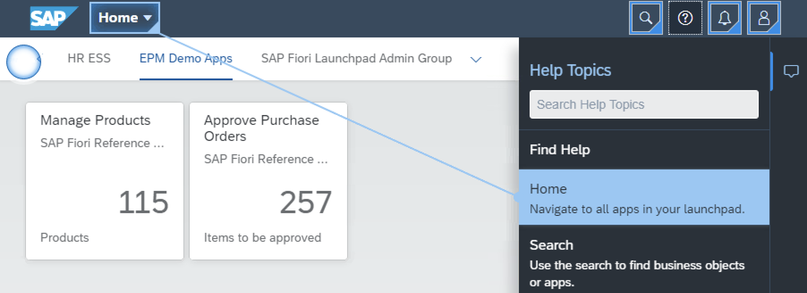
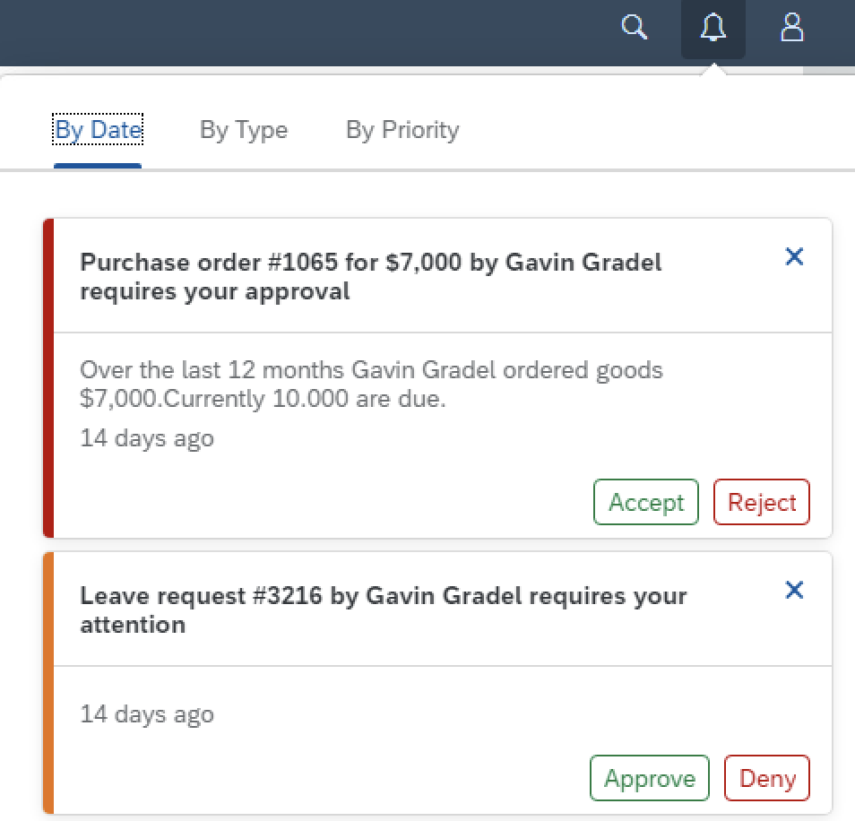
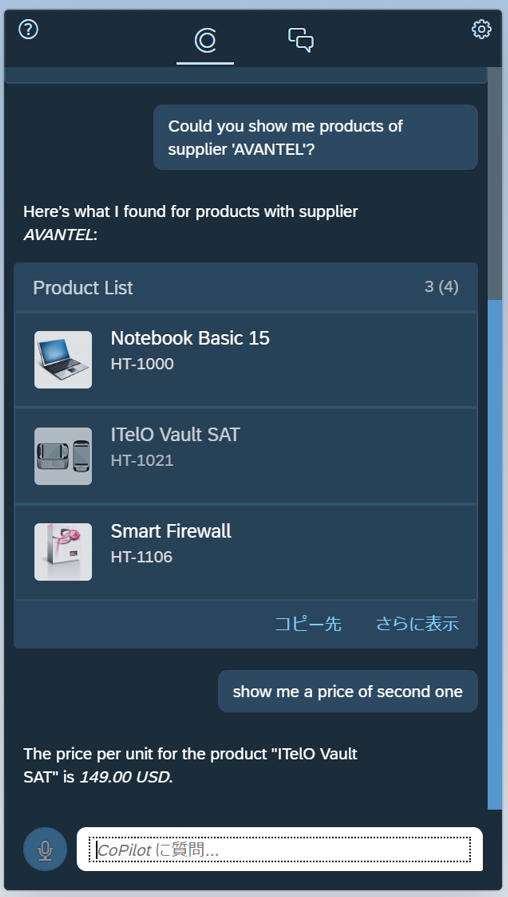
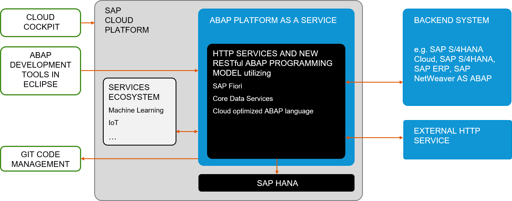

Gregor Wolf
Technische Optionen für die
S/4HANA (Cloud) Erweiterung
In-App und Side-by-Side
SAP TechEd 2018, Barcelona:
“Keep the Core Clean”
Björn Goerke,
Former SAP CTO & President SAP Business Technology Platform
S/4HANA and Fiori Funktionen
- Embedded/Real Time Analytics
- Personalisierung
- User Assistance
- Suche
- Benachrichtigungen
- SAP Conversational AI (Früher: CoPilot, Jetzt: RETIRING SOON)
Embedded/Real Time Analytics
Overview Pages

Embedded/Real Time Analytics
Analytical List Pages

Personalisierung durch Varianten
- Suchparameter
- Auswahl der in der Tabelle angezeigten spalten
- Variante kann als Kachel abgespeichert werden
User Assistance
Suche

Benachrichtigungen
SAP Conversational AI (Früher: CoPilot)
Achtung: Laut SAP Discovery Center "RETIRING SOON".
Spektrum der Erweiterungsmöglichkeiten

UI Adaptation - Demo

Kundenspezifische Felder
Beispiel aus dem SAP Extensibility Explorer:Enable Custom Fields in the Purchasing Process
Benutzerdefinierte Geschäftslogik
Analytical Apps
Fiori Apps LibrarySide-by-side Architektur

Side-by-side Extension Application Layers
SAP Cloud SDK & CAP

SAP Business Technology Platform, ABAP Environment
SAP Business Technology Platform Extension Factory
Zusammenfassung
- "Keep the Core clean"
- Soweit es geht mit Customizing und In-App-Erweiterungen auskommen
- Side-by-Side Erweiterungen genau planen
Vielen Dank
Ihre Fragen ...
Contact
Gregor Wolf,
Computerservice Wolf
gregor@computerservice-wolf.com
Twitter:
@wolf_gregor
| Präsentation | Business Card | ||
|---|---|---|---|

|